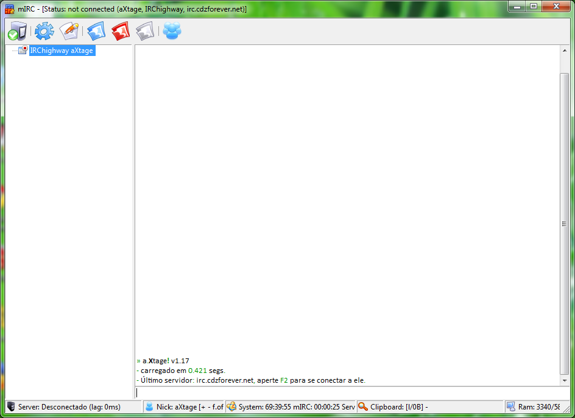

a.Xtage! - Advanced.Xtage

Funções:
- Auto-Join
- Auto-Identify
- Auto-Connect podendo ser configurado para usar diferentes nicks, fullname, idents, etc... para cada servidor
- Suporte a encriptação de mensagens usando blowfish/mirc fish (mais...)
- Visual simples, descomplicado e objetivo
O que ele não faz/tem:
- Sistema irritante de away enviando mensagens e floodando todos os canais com coisas que ninguém se importa, um simples /away para entrar em away e outro para sair é assim que o script funciona, se alguem falar com você, você saberá!
- MP3 player, o objetivo do script é conversar, chat, IRC... se quiser ouvir músicas recomendo foobar2000.
- Qualquer outra funcão desnecessaria para bate-papo.
Changelog
- v1.14 - 10/10/2010
- Adicionada a possibilidade de desativar o auto-join e auto-identify
- Release publico
- v1.15 - 11/10/2010
- Adicionado suporte para Wine, entretanto se rodando via Wine, o moo.mrc não irá funcionar, e o script irá desativar a encriptação via blowfish por incompatibilidades.
- Auto-Identify agora aceita * no campo rede, para que aquele nick seja identificado em todas as redes, entretanto você pode setar uma senha diferente para o mesmo nick especificando a rede, o auto-identify dara preferencia a essa senha.
- v1.16 - 24/10/2010
- Arrumado um problema que fazia alguns timers serem cancelados quando não deviam ser.
- Melhorada a forma que alguns eventos são tratados.
- Arrumado um erro que não mostrava quando a pessoa está away no whois.
- O script agora avisará quando houver novas versões.
- Melhorado a numeração das versões.
- v1.17 - 08/11/2010
- Atualizada DCX.DLL com release oficial com melhor compatilibidade com mIRC7.
- Melhorado o funcionamento dos emotions.
- Arrumado um bug que em alguns casos não era possivel abrir as opções do mIRC pela Toolbar.
Download
- Versão: 1.17 - Tamanho: 1.99MB - Data: 08/11/2010
Contato
Escreva para , ou #cdzforever @ irc.cdzforever.net